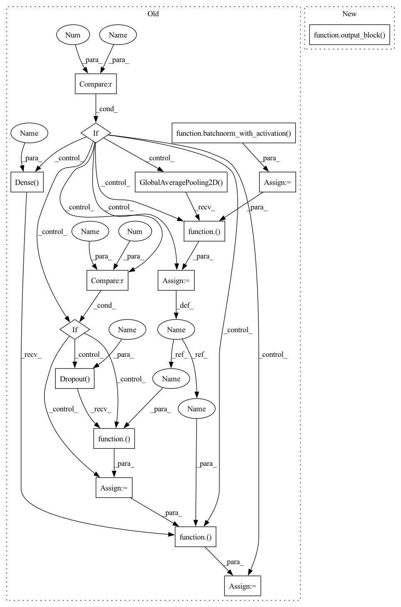

Pattern ID :39139
Before Change
nn = cmt_block(nn, num_head, sr_ratio, ffn_expansion, activation=activation, drop_rate=block_drop_rate, name=name)
nn = conv2d_no_bias(nn, 1280, 1, strides=1, name="post_")
nn = batchnorm_with_activation( nn, activation=activation, name="post_")
if num_classes > 0 :
nn = keras.layers.GlobalAveragePooling2D(name="avg_pool")( nn)
// nn = keras.layers.Dense(1280, name="post_dense")(nn)
if dropout > 0 :
nn = keras.layers.Dropout(dropout)(nn )
nn = keras.layers.Dense(num_classes, dtype="float32", activation=classifier_activation, name="predictions")(nn )
model = keras.models.Model(inputs, nn, name=model_name)
add_pre_post_process(model, rescale_mode="torch")
return modelAfter Change
global_block_id += 1
nn = cmt_block(nn, num_head, sr_ratio, ffn_expansion, activation=activation, drop_rate=block_drop_rate, name=name)
nn = output_block( nn, output_num_features, activation, num_classes, dropout, classifier_activation, act_first=True)
model = keras.models.Model(inputs, nn, name=model_name)
add_pre_post_process(model, rescale_mode="torch")
reload_model_weights(model, PRETRAINED_DICT, "cmt", pretrained, MultiHeadRelativePositionalEmbedding)
return modelIn pattern: SUPERPATTERN
Frequency: 3
Non-data size: 16
Instances Fragment ID: 111336862
Project Name: leondgarse/keras_cv_attention_models
Commit Name: 9047050ebd6007c33d6f9d8b4b78e6f972aba143
Time: 2022-03-03
Author: leondgarse@gmail.com
File Name: keras_cv_attention_models/cmt/cmt.py
M Class Name: AnonimousClass
N Class Name: AnonimousClass
M Method Name: CMT(16)
N Method Name: CMT(15)
M Parent Class:
N Parent Class:
M File Name: keras_cv_attention_models/cmt/cmt.py
N File Name: keras_cv_attention_models/cmt/cmt.py
M Start Line: 153
M End Line: 165
N Start Line: 135
N End Line: 160
Before Change
nn = conv2d_no_bias(inputs, stem_width, 3, strides=2, padding="same", name="stem_1_")
nn = batchnorm_with_activation(nn, activation=activation, name="stem_1_")
nn = conv2d_no_bias(nn, stem_width, 3, strides=1, padding="same", name="stem_2_")
nn = batchnorm_with_activation( nn, activation=activation, name="stem_2_")
stage [1, 2, 3, 4]
total_blocks = sum(num_blocks)
global_block_id = 0
for stack_id, (num_block, out_channel, block_type) in enumerate(zip(num_blocks, out_channels, block_types)):
is_conv_block = True if block_type[0].lower() == "c" else False
stack_se_ratio = se_ratio[stack_id] if isinstance(se_ratio, (list, tuple)) else se_ratio
stack_strides = strides[stack_id] if isinstance(strides, (list, tuple)) else strides
for block_id in range(num_block):
name = "stage_{}_block_{}_".format(stack_id + 1, block_id + 1)
stride = stack_strides if block_id == 0 else 1
conv_short_cut = True if block_id == 0 else False
block_se_ratio = stack_se_ratio[block_id] if isinstance(stack_se_ratio, (list, tuple)) else stack_se_ratio
block_drop_rate = drop_connect_rate * global_block_id / total_blocks
global_block_id += 1
if is_conv_block:
nn = res_MBConv(nn, out_channel, conv_short_cut, stride, expansion, block_se_ratio, block_drop_rate, activation=activation, name=name)
else:
nn = res_mhsa(nn, out_channel, conv_short_cut, stride, head_dimension, block_drop_rate, activation=activation, name=name)
nn = res_ffn(nn, expansion=expansion, drop_rate=block_drop_rate, activation=activation, name=name + "ffn_")
if num_classes > 0 :
nn = keras.layers.GlobalAveragePooling2D(name="avg_pool")( nn)
if drop_rate > 0 :
nn = keras.layers.Dropout(drop_rate)( nn)
nn = keras.layers.Dense(num_classes, dtype="float32", activation=classifier_activation, name="predictions")( nn)
model = keras.models.Model(inputs, nn, name=model_name)
return model
After Change
nn = res_mhsa(nn, out_channel, conv_short_cut, stride, head_dimension, block_drop_rate, activation=activation, name=name)
nn = res_ffn(nn, expansion=expansion, drop_rate=block_drop_rate, activation=activation, name=name + "ffn_")
nn = output_block( nn, num_classes=num_classes, drop_rate=drop_rate, classifier_activation=classifier_activation)
model = keras.models.Model(inputs, nn, name=model_name)
return model
Fragment ID: 111336863
Project Name: leondgarse/keras_cv_attention_models
Commit Name: d2bf7528de720b9f01a12c367db19090700a0404
Time: 2021-12-27
Author: leondgarse@gmail.com
File Name: keras_cv_attention_models/coatnet/coatnet.py
M Class Name: AnonimousClass
N Class Name: AnonimousClass
M Method Name: CoAtNet(17)
N Method Name: CoAtNet(17)
M Parent Class:
N Parent Class:
M File Name: keras_cv_attention_models/coatnet/coatnet.py
N File Name: keras_cv_attention_models/coatnet/coatnet.py
M Start Line: 163
M End Line: 192
N Start Line: 182
N End Line: 187
Before Change
if num_features != 0: // efficientnet like
nn = conv2d_no_bias(nn, num_features, 1, strides=1, name="features_")
nn = batchnorm_with_activation( nn, activation=activation, name="features_")
if num_classes > 0 :
nn = keras.layers.GlobalAveragePooling2D(name="avg_pool")( nn)
if drop_rate > 0 :
nn = keras.layers.Dropout(drop_rate, name="head_drop")( nn)
nn = keras.layers.Dense(num_classes, dtype="float32", activation=classifier_activation, name="predictions")( nn)
model = keras.models.Model(inputs, nn, name=model_name)
return model
After Change
if preact: // resnetv2 like
nn = batchnorm_with_activation(nn, activation=activation, zero_gamma=False, name="post_")
nn = output_block( nn, output_num_features, activation, num_classes, drop_rate=drop_rate, classifier_activation=classifier_activation)
model = keras.models.Model(inputs, nn, name=model_name)
return model
Fragment ID: 111336861
Project Name: leondgarse/keras_cv_attention_models
Commit Name: a6b256994deba19f65ec593111c13c3744960557
Time: 2021-10-13
Author: leondgarse@gmail.com
File Name: keras_cv_attention_models/aotnet/aotnet.py
M Class Name: AnonimousClass
N Class Name: AnonimousClass
M Method Name: AotNet(29)
N Method Name: AotNet(24)
M Parent Class:
N Parent Class:
M File Name: keras_cv_attention_models/aotnet/aotnet.py
N File Name: keras_cv_attention_models/aotnet/aotnet.py
M Start Line: 169
M End Line: 226
N Start Line: 212
N End Line: 271